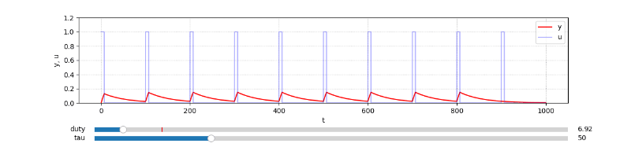
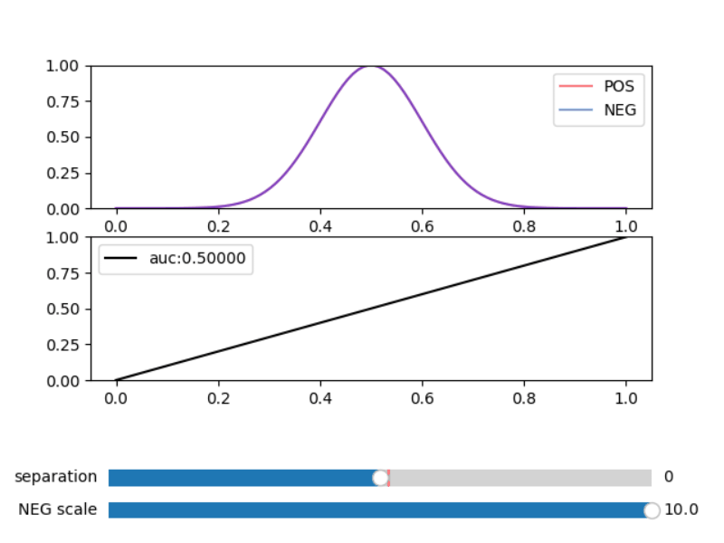
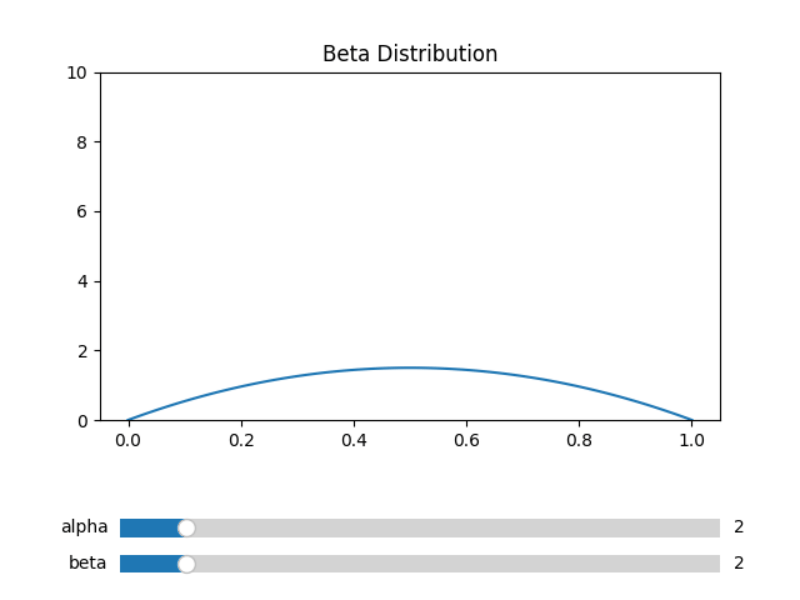
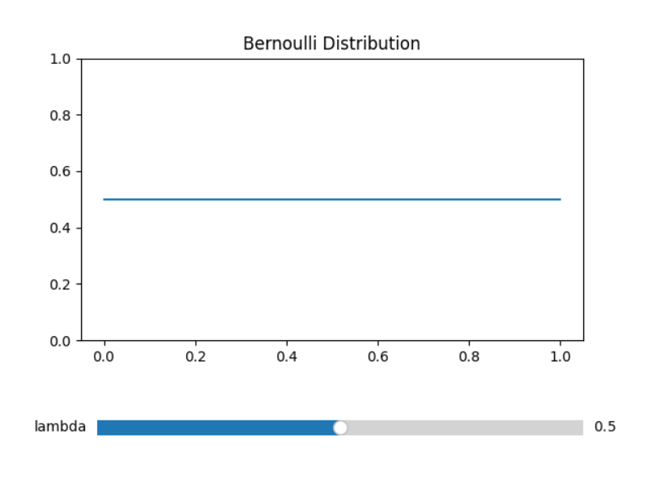
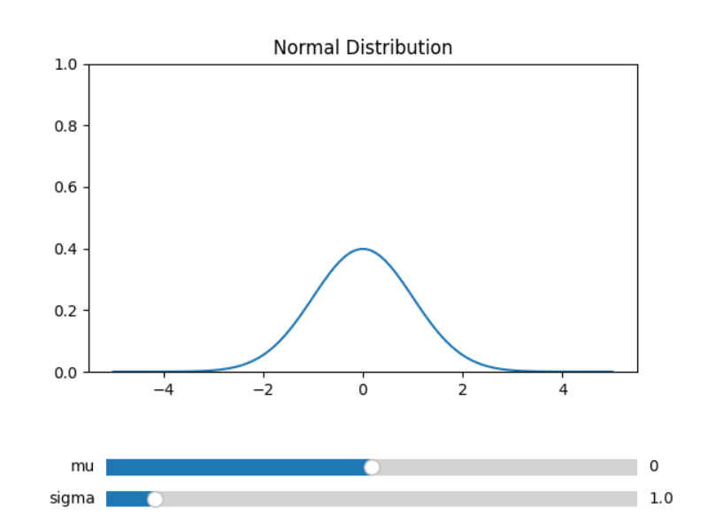

Matplotlib の Slider を使って色々なパラメータを動かしてグラフの変化を眺めるプログラムです。
・PWM (Pulse Width Moduration）

duty比: 入力パルスの High期間とLow期間の比率
tau： 時定数。充電の速度
・ROC (Receiver Operating Characteristic)

・ベータ分布
alpha－1.0：表の出た回数、beta－1.0：裏の出た回数の事後確率分布に対応している。

・ベルヌーイ分布
横軸 0.0、1.0 がコイントスの裏の出る事象、表のでる事象。
lambdaが表の出る確率に対応している。

・正規分布

pip install opencv-python scipy matplotlib
・PWM
python src\Slider_PWM.py
・ROC
python src\Slider_ROC.py
・ベータ分布
python src\Slider_Beta_Distribution.py
・ベルヌーイ分布
python src\Slider_Bernoulli_Distribution.py
・正規分布
python src\Slider_Normal_Distribution.py